Jurnal Eropa · Hari 13 dari 16
Kemarin seharian mengejar sesuatu yang bergerak. Hari ini justru sebaliknya: satu kereta, satu kursi, dan lima jam yang tidak menuntut apa-apa. Meninggalkan London bukan lewat bandara — lewat stasiun tua di ujung utara kotanya, dengan papan keberangkatan yang punya kebiasaan aneh dan bikin semua orang berdiri menghadapnya. Enam setengah jam kemudian, sampai di kota yang stasiunnya berada di dasar lembah bekas danau.
Pagi cerah pertama sejak mendarat di negara ini
Pagi ini London memutuskan untuk ramah. Langitnya biru, matahari kena tembok-tembok putih di seberang jalan, dan tidak ada satu pun payung yang perlu dibuka — kebalikan dari sambutan kemarin siang.
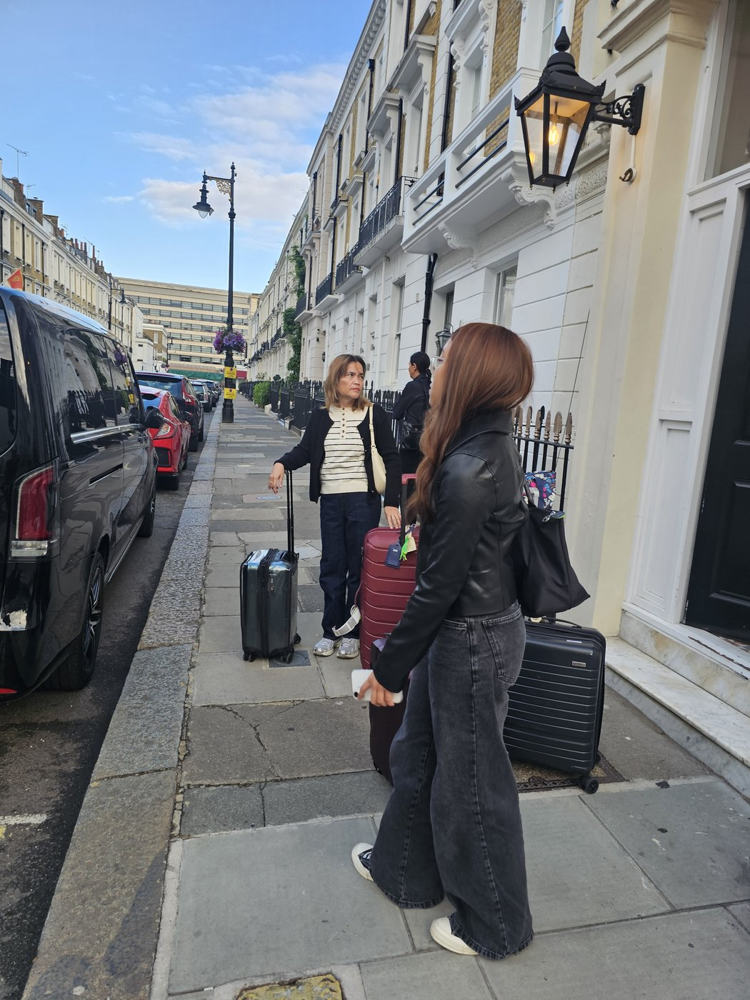
Dan hari ini ada satu keputusan yang diambil tanpa perdebatan: tidak naik kereta bawah tanah. Kemarin, empat koper besar dan tangga stasiun tanpa lift sudah cukup jadi pelajaran. Jadi pagi ini dipesan lewat aplikasi: Uber, dan sengaja yang berbadan besar.
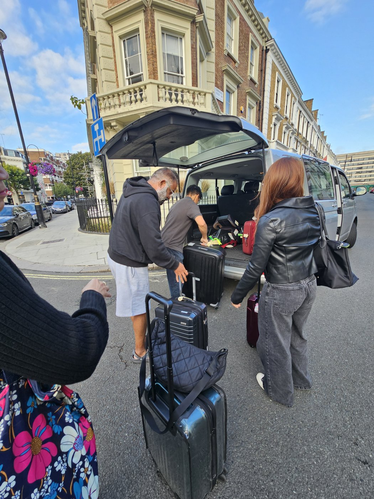
Dan itu keuntungan memesan lewat aplikasi yang paling terasa hari itu: ukuran mobilnya bisa dipilih duluan. Untuk empat orang dengan empat koper besar, memanggil mobil biasa di pinggir jalan adalah undangan untuk drama — koper tidak muat, sopir menolak, waktu habis. Di aplikasi, kelas mobil besar dipilih sejak awal, harganya sudah kelihatan sebelum dipesan, dan mobilnya berhenti persis di depan pintu penginapan.
Untuk rombongan berkoper yang harus mengejar kereta pagi, selisih ongkosnya dengan kereta bawah tanah terbayar oleh satu hal saja: tidak ada tangga.
Dan karena ini London, ada satu hal yang perlu diketahui pendatang: taksi hitam dan mobil aplikasi seperti Uber itu dua jenis kendaraan yang berbeda secara hukum di kota ini, bukan sekadar beda merek.
Jadi keduanya bukan saingan yang sama persis. Taksi hitam menang kalau kamu sedang berdiri di jalan dan butuh mobil sekarang juga. Mobil aplikasi menang kalau kamu tahu tujuanmu dari semalam, ingin tahu harganya sebelum berangkat, dan — seperti pagi ini — butuh bagasi yang muat empat koper besar.
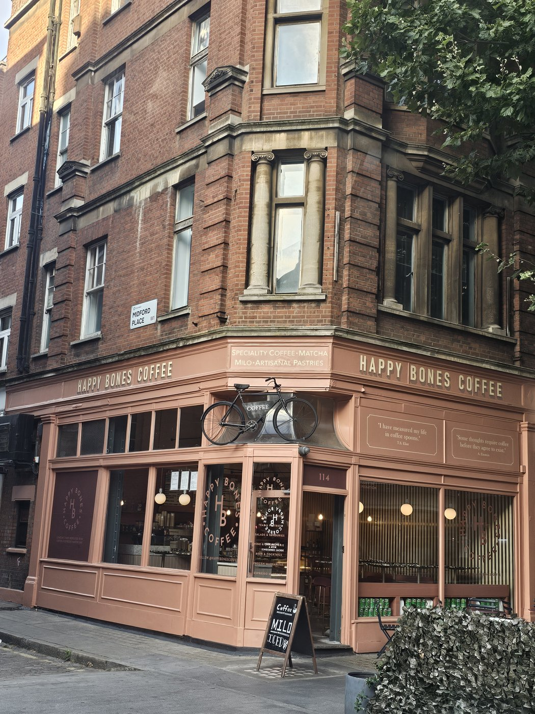
Kebiasaan kereta Inggris yang bikin bingung pendatang
Meninggalkan London kali ini bukan lewat bandara, melainkan lewat Stasiun Euston — pintu utara kota ini, tempat berangkatnya kereta ke Birmingham, Manchester, Liverpool, dan terus ke Skotlandia.
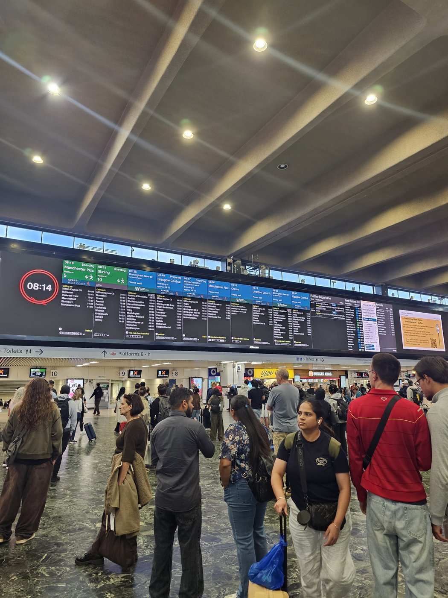
Papan ini menjelaskan dua kebiasaan kereta Inggris sekaligus, dan dua-duanya bikin bingung kalau baru pertama kali.
Di papan pagi itu, deretan tujuannya terbaca seperti daftar isi peta Inggris bagian utara: Manchester Piccadilly 08.18, Stirling 08.21, Birmingham New Street 08.25, Glasgow Central 08.40, Wolverhampton 08.47, Crewe 08.53, Liverpool Lime Street 09.19. Dua yang paling atas sudah bertanda hijau Boarding; sisanya masih Please wait.
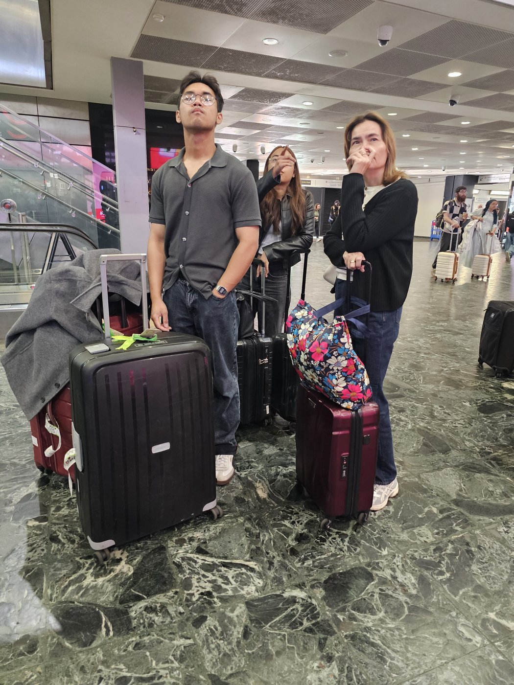
Lalu angkanya muncul, dan aula yang tadi diam bergerak serentak ke arah pintu peron.
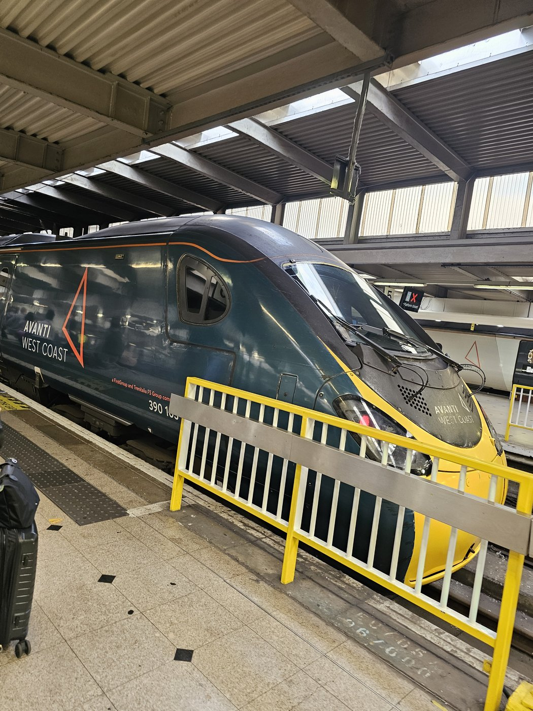
Ada satu kali ganti di tengah jalan, dan jatahnya tiga belas menit
Sebelum berangkat, begini rencananya menurut aplikasi jadwal kereta:
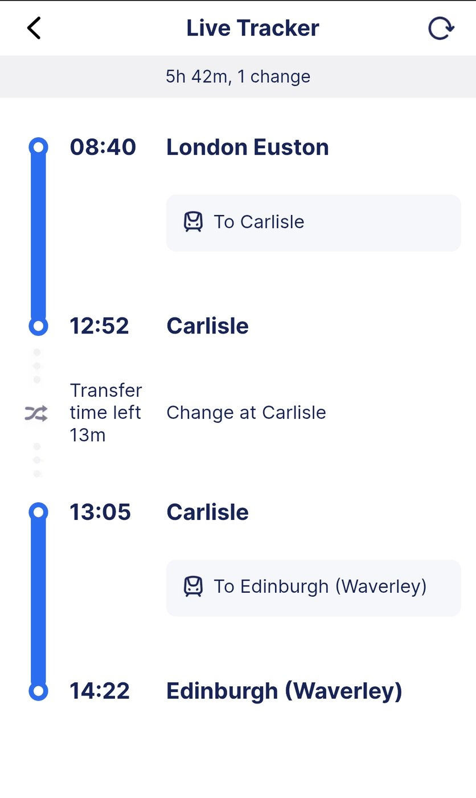
Dan sekarang lihat lagi papan Euston tadi. Kereta jam 08.40 di papan itu tertulis tujuannya Glasgow Central — bukan Carlisle, apalagi Edinburgh. Padahal itulah kereta yang kami naiki.
Persis seperti kebiasaan yang baru saja dijelaskan papan itu sendiri: di Inggris kamu naik kereta “ke Glasgow” lalu turun di tengah jalan, karena yang menentukan bukan nama besar di papan, melainkan daftar calling at di bawahnya. Pelajaran itu tidak berhenti jadi teori — dalam empat jam ke depan, kami mempraktikkannya sendiri.
Yang sedikit bikin waswas cuma satu angka: tiga belas menit. Dua hari lalu, tiga puluh menit di Frankfurt harus ditempuh sambil lari lintas terminal dan menyelak antrean imigrasi. Tiga belas menit terdengar jauh lebih mepet lagi.
Tapi ini kereta, bukan pesawat, dan itu bedanya besar: pindah peron, bukan pindah terminal. Tidak ada pemeriksaan keamanan, tidak ada border, tidak ada bagasi yang harus dipercayakan ke ban berjalan lalu berdoa semoga ikut. Kopernya ada di tangan sendiri, dan yang perlu ditemukan cuma satu nomor peron.
Avanti West Coast, dan jalur kereta tertua yang masih jadi tulang punggung
Dan inilah keretanya: hidung panjang meruncing, cat biru tua bergaris oranye, dengan tulisan AVANTI WEST COAST di sisinya.
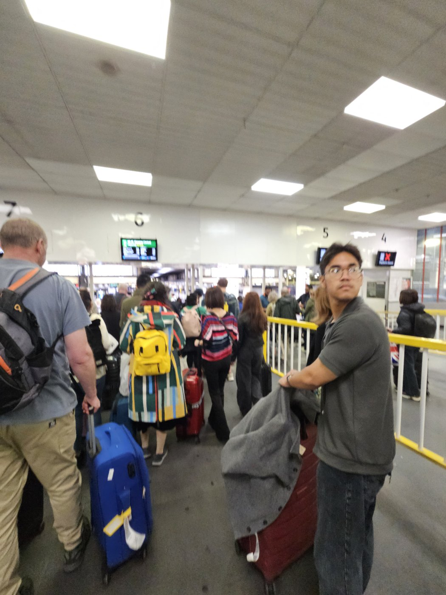
Kereta jenis ini punya nama panggilan: Pendolino, dari bahasa Italia untuk “bandul kecil”. Dan sebutan itu harfiah — badan keretanya benar-benar bisa miring ke dalam saat menikung, seperti pengendara motor.
Alasannya bukan gaya-gayaan, tapi sejarah. Jalur yang dilaluinya, West Coast Main Line, dibangun pada abad ke-19 — jauh sebelum ada yang membayangkan kereta melaju 200 km/jam. Tikungannya banyak dan tidak bisa diluruskan tanpa membongkar setengah negeri. Jadi yang diubah bukan relnya, melainkan keretanya: dibuat bisa memiringkan badan supaya sanggup menikung lebih cepat tanpa penumpangnya terlempar ke samping.
Itu cara yang sangat Inggris dalam menyelesaikan masalah: infrastruktur lamanya dipertahankan, dan teknologinya yang disuruh menyesuaikan diri.
Dan itu justru yang paling dibutuhkan hari ini
Setelah dua hari yang isinya lari di Frankfurt, koper hilang, belanja jam satu pagi, dan jalan kaki belasan kilometer — hari ini bentuknya kebalikan total. Duduk. Menghadap ke depan. Tidak ada yang perlu dikejar sampai kereta berhenti.
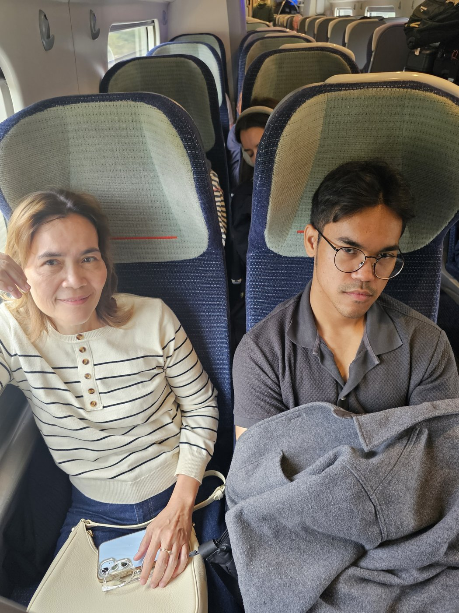
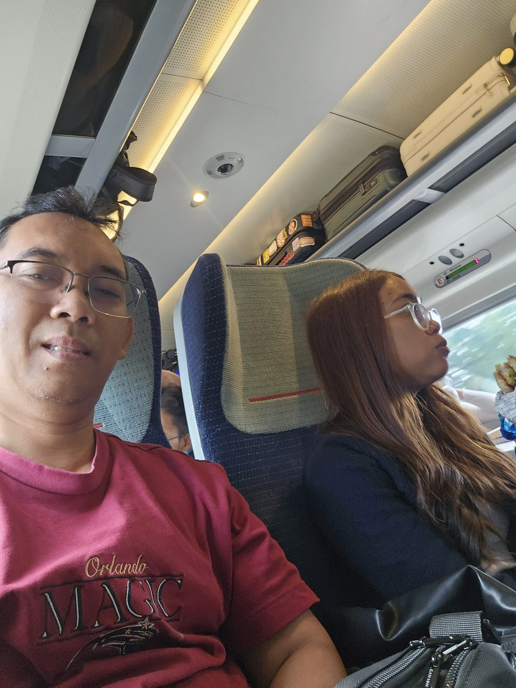
Kursinya berkain biru dengan sandaran hijau, dan kopernya cukup diletakkan di rak ujung gerbong — tidak perlu diangkat ke atas kepala, tidak perlu ditimbang, tidak perlu ditempeli label.
Dan itu perbandingan yang layak dicatat buat siapa pun yang menyusun rute sendiri di Eropa. Untuk jarak seperti ini, kereta hampir selalu lebih waras daripada pesawat — bukan karena lebih cepat di atas kertas, tapi karena semua ongkos tersembunyi pesawat tidak ada: tidak ada perjalanan ke bandara di pinggir kota, tidak ada datang dua jam sebelumnya, tidak ada antrean pemeriksaan, tidak ada batas 23 kilogram, dan tidak ada koper yang bisa tertinggal di negara lain.
Setelah apa yang terjadi dua hari lalu, kalimat terakhir itu terasa sangat pribadi.
Tapi ada satu hal yang sebaiknya disiapkan sebelum naik, dan ini pelajaran yang baru terasa di tengah jalan: bawa bekal makan sendiri.
Kereta jarak jauh di Inggris memang punya layanan makanan, tapi jangan bayangkan seperti di pesawat. Tidak ada yang mengantarkan makanan ke kursimu. Yang ada satu gerbong khusus berisi kedai kecil, dan pilihannya terbatas — roti isi, keripik, minuman, kue. Kalau mau beli, kamu yang harus berjalan ke gerbong itu, menyusuri lorong sempit di kereta yang sedang melaju, kadang sambil mengantre.
Untuk perjalanan lima jam lebih dengan rombongan, itu merepotkan — apalagi kalau kursi ditinggal bergantian karena barang tidak bisa ditinggal sendirian. Sekantong bekal yang dibeli di stasiun sebelum berangkat menyelesaikan seluruh urusan itu sekaligus, dan biasanya jauh lebih murah.
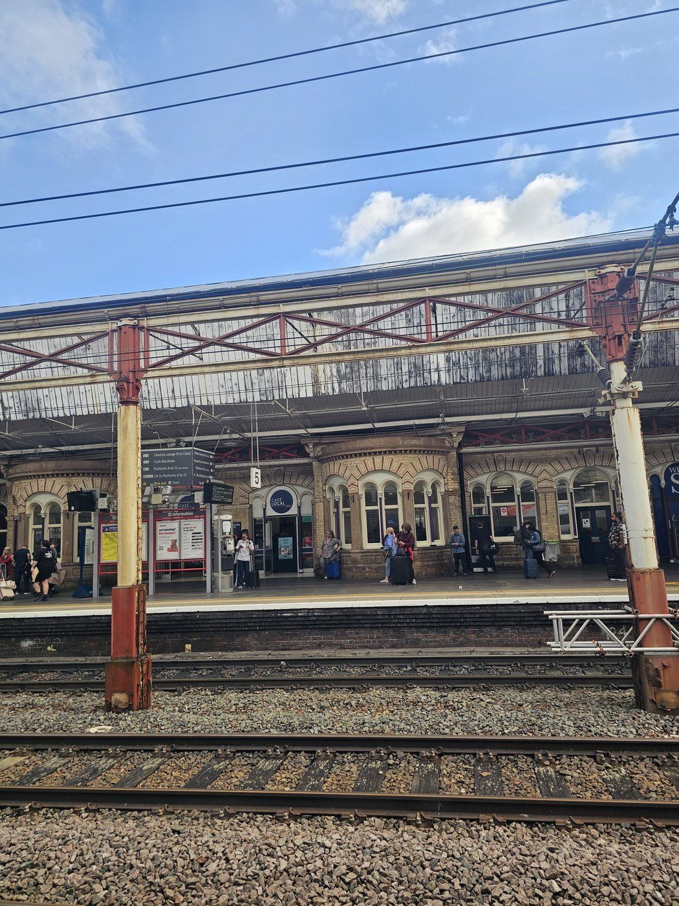
Crewe ini bukan kota besar — penduduknya jauh lebih sedikit daripada kota-kota yang namanya ada di papan Euston tadi. Tapi namanya dikenal semua orang di Inggris karena satu hal: hampir semua jalur kereta ke utara bertemu di sini. Kota ini tumbuh dari nol pada abad ke-19 semata-mata karena persimpangan relnya, lengkap dengan bengkel lokomotif dan perumahan pekerjanya. Kotanya ada karena stasiunnya, bukan sebaliknya.
Bagian Inggris yang tidak pernah masuk foto liburan
Semakin ke utara, gedung makin jarang, dan yang menggantikannya cuma satu warna.
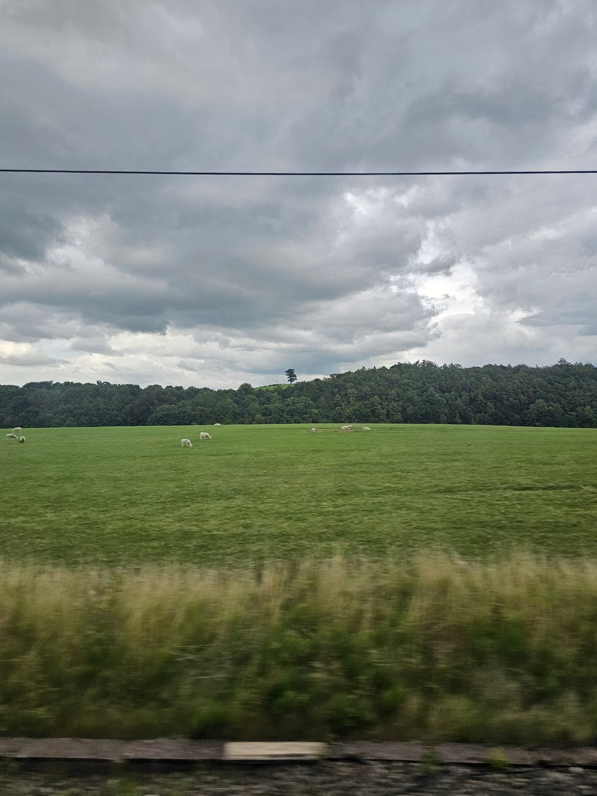
Dan begitulah isinya berjam-jam: padang rumput dipagari barisan pohon, domba yang tidak peduli, lalu padang berikutnya. Tidak ada yang bisa difoto dengan bagus dari kereta yang melaju, dan tidak ada satu pun pemandangan yang akan masuk kartu pos.
Tapi ini bagian negara yang sebenarnya paling menjelaskan dirinya. Inggris yang selama seminggu terakhir kami lihat adalah Inggris yang berdesakan — trotoar penuh, kereta bawah tanah penuh, pagar istana penuh. Yang di luar jendela ini kebalikannya, dan luasnya jauh lebih besar.
Turun dari kereta pertama, di kota terakhir sebelum Skotlandia
Lalu keretanya berhenti, dan kali ini bukan sekadar berhenti — di sini semuanya harus turun. Stasiunnya bikin orang mendongak duluan sebelum sempat mencari peron: rangka besi hitam bersilangan, kaca di atasnya, dan jembatan penyeberangan berkisi-kisi hijau tua yang membentang di atas peron.
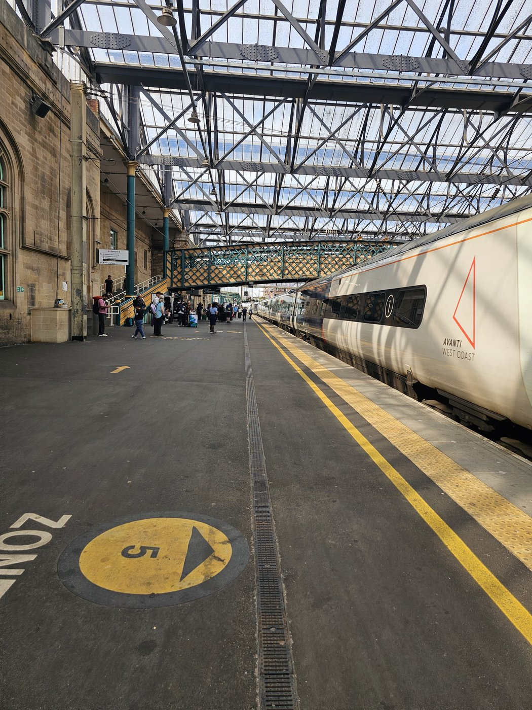
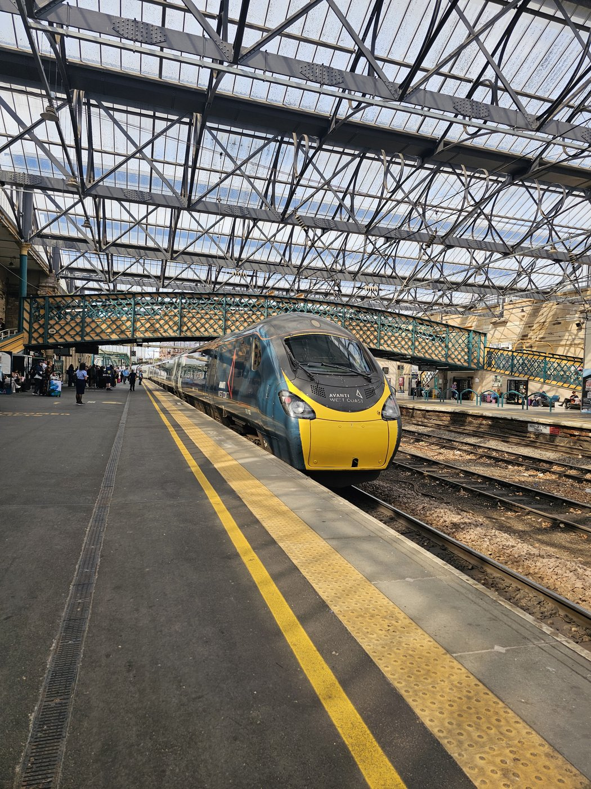
Kiri: kereta yang barusan kami tinggalkan, masih berdiri di peron. Angka besar di lantai itu penanda zona — supaya penumpang berdiri di titik yang tepat sesuai gerbong di tiketnya.
Di dinding peron ada papan kecil yang isinya sempat bikin waswas: Platform 3, lalu di bawahnya Platforms 4–8 via overbridge, Way out via overbridge. Artinya peron 4 sampai 8 cuma bisa ditempuh lewat jembatan penyeberangan tadi — naik tangga, menyeberang di atas rel, turun lagi. Dengan jatah tiga belas menit dan empat koper besar, itu skenario yang tidak enak dibayangkan.
Ternyata tidak perlu. Kereta sambungan ke Edinburgh datang ke peron yang sama. Jadi tidak ada tangga, tidak ada jembatan, tidak ada koper yang harus diangkat menyeberangi rel — cukup berdiri di tempat, tunggu, lalu naik lagi.
Untuk perjalanan yang dua hari terakhirnya diisi lari lintas terminal dan koper hilang, tiga belas menit yang ternyata cuma berarti “jangan ke mana-mana” itu terasa seperti hadiah.
Carlisle sendiri bukan kota persinggahan biasa. Ini kota besar terakhir di sisi Inggris sebelum perbatasan Skotlandia, dan selama berabad-abad posisinya persis itu: kota perbatasan yang berkali-kali berpindah tangan antara dua kerajaan, lengkap dengan kastil dan tembok pertahanannya. Bahkan tembok Romawi yang membelah pulau ini dari laut ke laut lewat tidak jauh dari sini.
Sekarang yang tersisa dari posisi strategis itu adalah stasiunnya: simpul tempat jalur-jalur dari Inggris utara bertemu sebelum melanjutkan ke Skotlandia. Itu sebabnya rute kami berganti kereta di sini, dan bukan di kota lain.
Stasiun-stasiun besar Inggris rata-rata bergaya sama: atap lengkung dari besi dan kaca, dibangun abad ke-19 waktu kereta api masih teknologi termutakhir dan stasiunnya sengaja dibuat semegah katedral. Yang berubah cuma isinya — sekarang di bawah atap itu ada mesin tiket, kedai kopi, dan papan digital.
Dan selisihnya terbaca dari jam di foto
Menurut jadwal di aplikasi tadi, kereta sambungan ke Edinburgh berangkat dari Carlisle jam 13.05. Jam yang tercatat di foto peron ini: 13.17.
Jadi dua belas menit setelah kereta itu semestinya sudah berjalan, kami masih berdiri di peron Carlisle. Perjalanan hari itu meleset dari jadwalnya.
Apa persisnya yang terjadi tidak ada catatannya, dan tidak ada gunanya dikarang. Yang bisa dipastikan cuma ujungnya: foto pertama di Edinburgh diambil jam 14.36, sementara jadwalnya tiba 14.22. Meleset, tapi cuma seperempat jam.
Dan di sinilah ada satu aturan yang wajib diketahui siapa pun yang naik kereta di Inggris dengan rute berganti: selama kamu memegang satu tiket menerus untuk seluruh rute — bukan dua tiket terpisah yang dibeli sendiri-sendiri — sambungan yang terlewat karena kereta pertama telat bukan urusanmu. Kamu berhak naik kereta berikutnya tanpa bayar lagi. Yang membeli dua tiket terpisah tidak punya perlindungan itu; kalau ketinggalan, tiket keduanya hangus.
Selisih harganya kadang tipis. Selisih risikonya tidak.
Dan stasiunnya berada di dasar lembah, bukan di pinggir kota
Jam setengah tiga lewat, keretanya berhenti untuk terakhir kalinya. Sampai.
Nama stasiunnya Waverley, dan itu nama yang tidak biasa untuk sebuah stasiun: diambil dari judul novel. Waverley adalah karya Walter Scott, penulis Skotlandia abad ke-19 yang tulisannya ikut membentuk cara dunia membayangkan negeri ini — dataran tinggi, kilt, dan segala romantikanya. Sejauh yang tercatat, ini satu-satunya stasiun kereta besar di dunia yang dinamai dari sebuah novel.
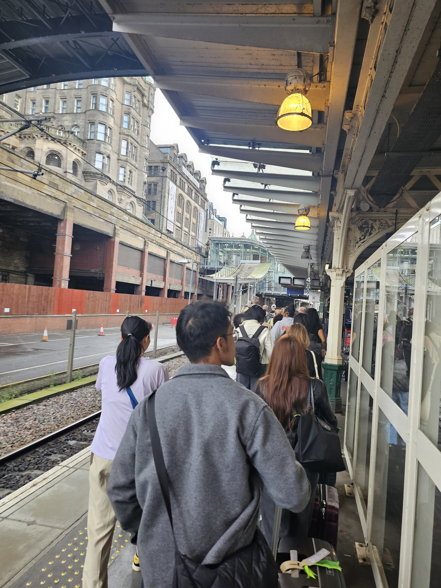
Ini hal pertama yang bikin kaget begitu turun. Stasiun utama Edinburgh tidak berada di pinggir kota, dan tidak juga di permukaan tanah. Dia duduk di dasar sebuah lembah, tepat di antara dua bagian kota yang berbeda umur — kota lama di satu sisi bukit, kota baru di sisi lainnya.
Lembah itu dulunya danau. Berabad-abad lalu, air itu sengaja dijadikan pertahanan alami untuk kota di atas bukit. Setelah dikeringkan, ruang kosong yang tersisa jadi tempat paling masuk akal untuk menaruh rel — dan itulah kenapa keluar dari stasiun ini artinya naik, bukan berjalan lurus.
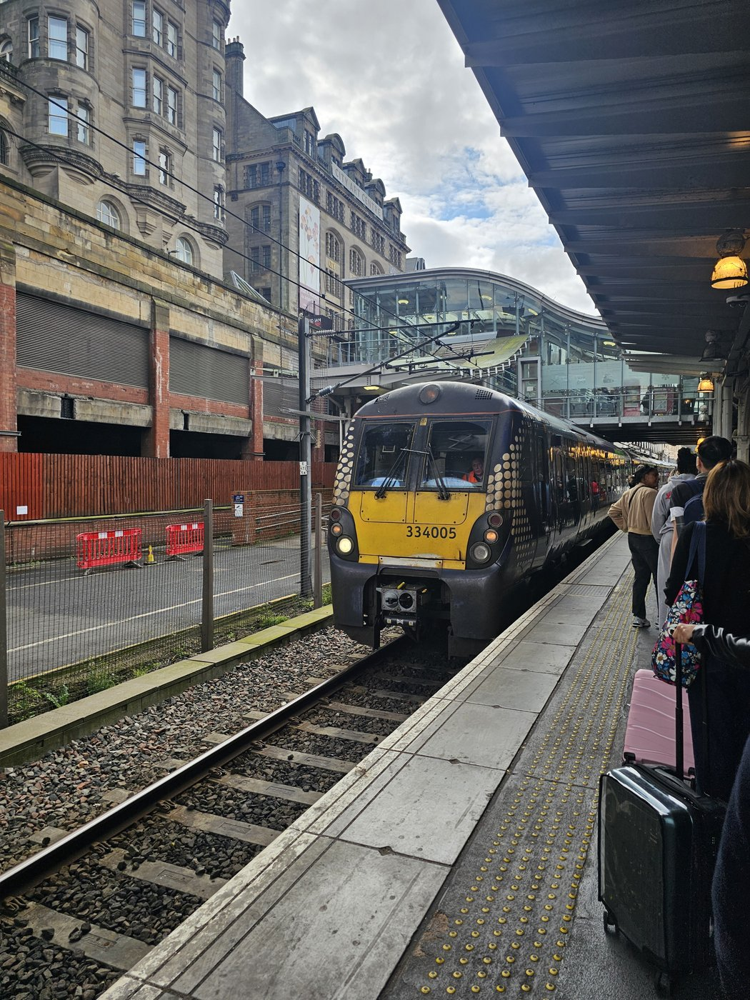
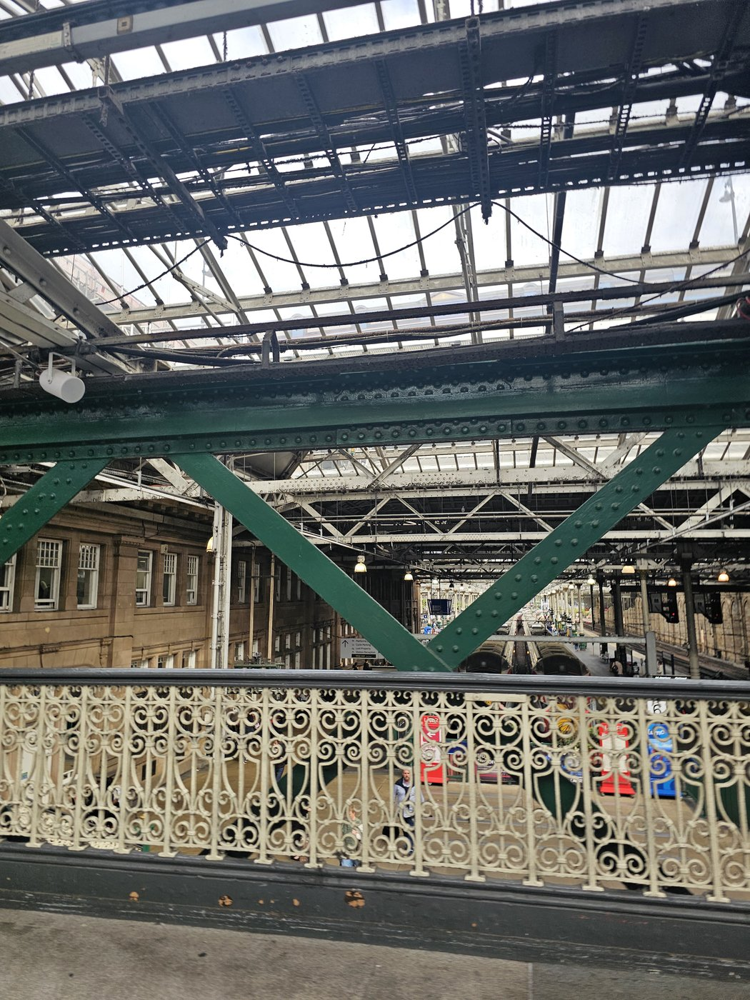
Kiri: kereta lokal Skotlandia, bernomor 334005 di hidungnya. Kanan: pagar besi cor berukir sulur di dalam stasiunnya — dibuat waktu bahkan pagar peron pun masih dianggap perlu diberi hiasan.
Tiga menit jalan kaki, dan sudah jelas ini bukan Inggris
Naik dari stasiun, dan yang menyambut adalah deretan bangunan batu abu-abu kehitaman — bukan bata merah seperti sepanjang perjalanan tadi.
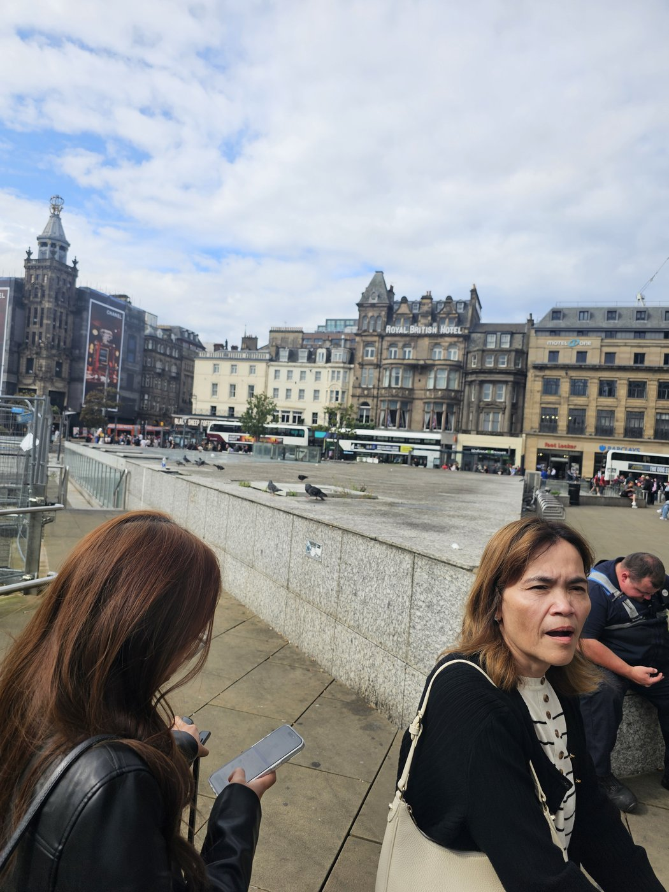
Dan tepat di ujung jalan, satu bangunan yang namanya tercetak besar dengan huruf emas di dindingnya: THE SCOTSMAN — bekas kantor surat kabar tertua dan paling terkenal di Skotlandia, yang gedungnya sekarang jadi hotel.
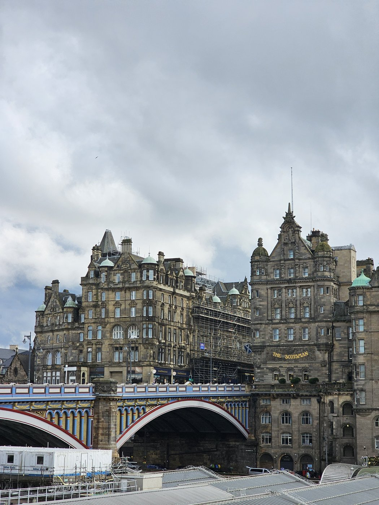
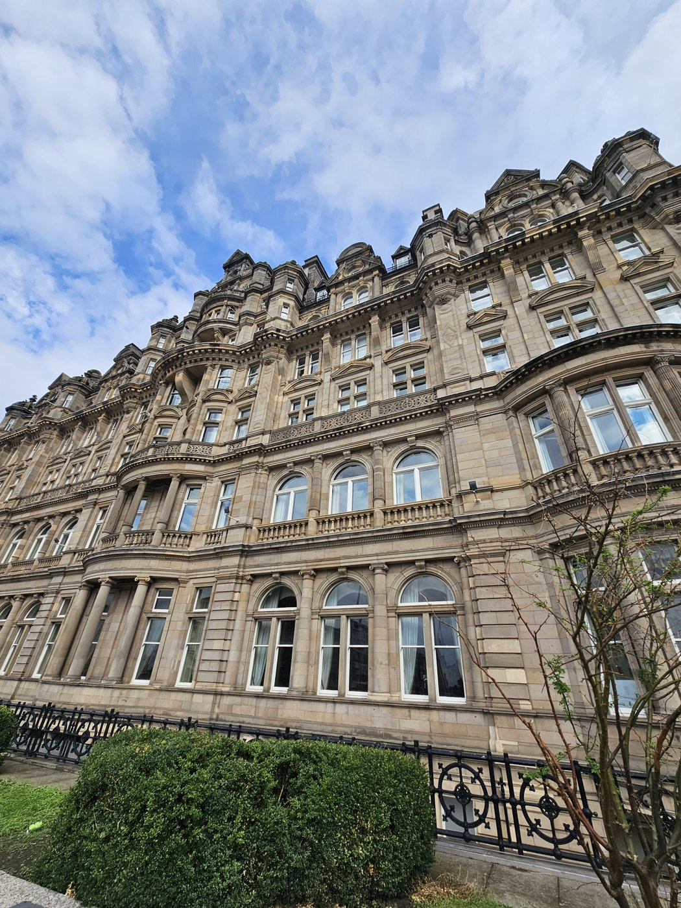
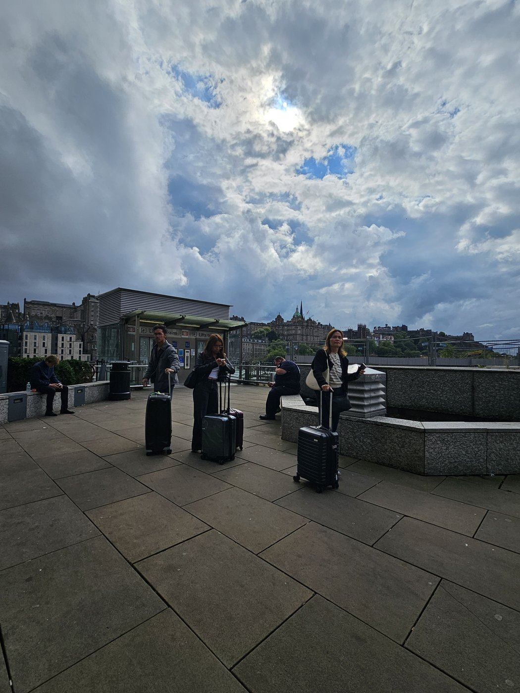
Dan ini bukan kostum untuk turis
Di depan sebuah hotel besar di pusat kota, dua orang berdiri di kedua sisi pintunya dengan pakaian yang bikin semua orang otomatis mengeluarkan kamera: jas tweed hijau dan kain kotak-kotak.
Perlu diluruskan sejak awal, sebelum fotonya bikin salah sangka: ini bukan penginapan kami. Kami cuma lewat, minta izin, dan menumpang berfoto. Penginapan kami ada di tempat lain sama sekali — dan ceritanya ada di bawah.
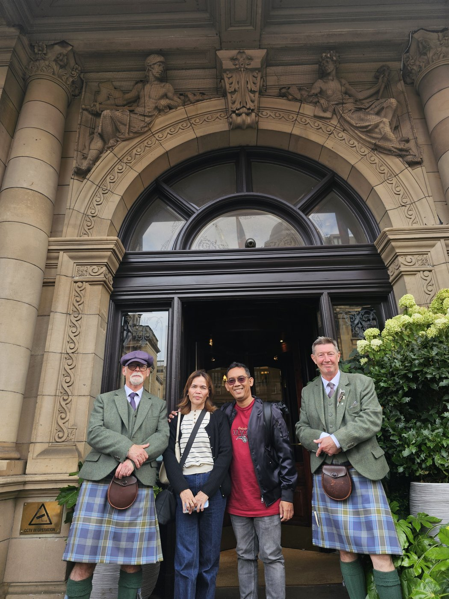
Kain kotak-kotaknya namanya tartan, dan roknya kilt. Yang perlu diketahui: polanya bukan sekadar motif. Susunan garis dan warnanya menandai kelompok atau keluarga tertentu, dan tiap pola punya namanya sendiri yang terdaftar resmi. Perusahaan, sekolah, bahkan kota juga bisa punya tartan sendiri — jadi seragam penjaga pintu ini kemungkinan besar memakai pola khusus tempat itu, bukan pola sembarangan.
Dan tas kecil berbulu yang menggantung di depan pinggangnya itu sporran — ada karena kilt tidak punya saku.
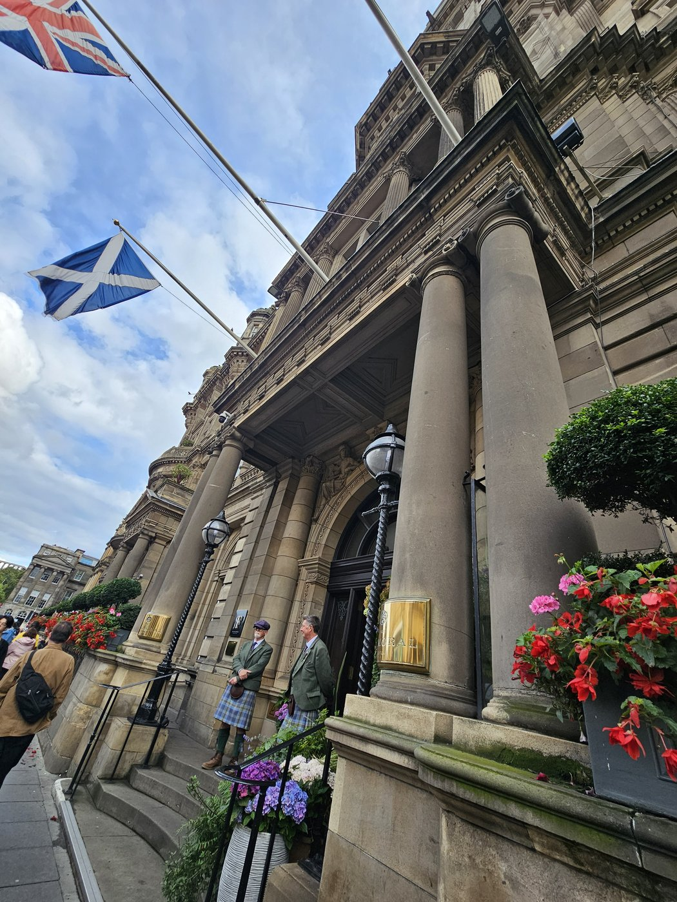
Jam tiga kurang, dan jalanannya berubah wujud
Dari penginapan, keliling sebentar naik taksi. Dan taksinya pun langsung menandai bahwa ini kota lain: kuning cerah, bukan hitam seperti di London, dengan nomor telepon dicetak besar di badannya berawalan 0131 — kode telepon Edinburgh.
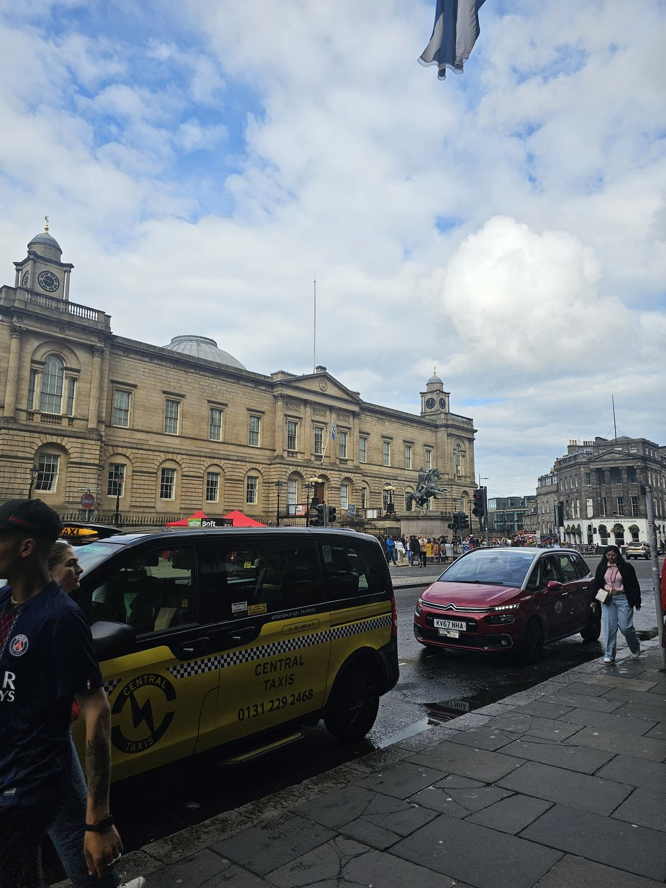
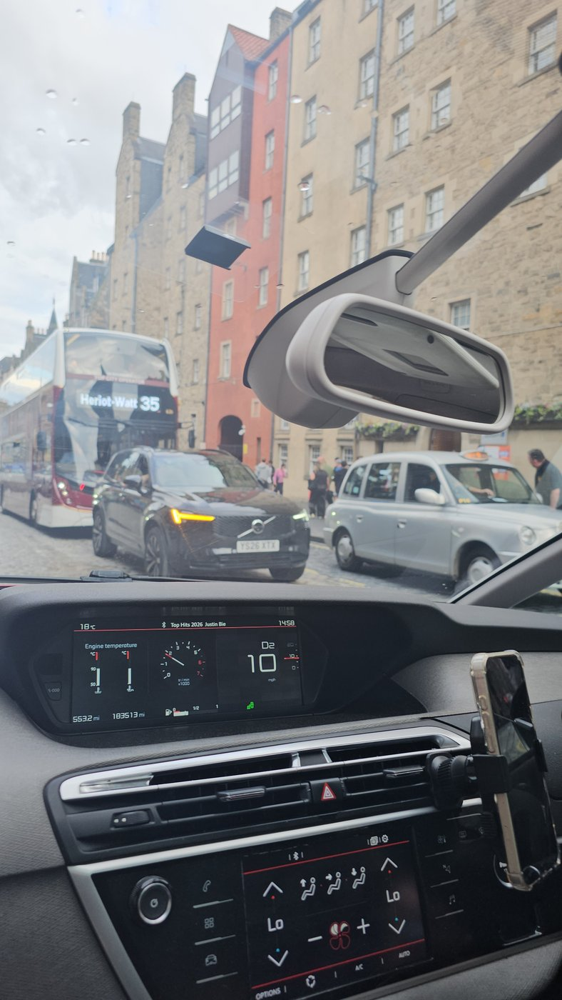
Dan begitu masuk ke bagian kota yang lebih tua, jalanannya menyempit, batunya menghitam, dan bangunannya menjulang tinggi dengan cerobong-cerobong berjajar di atapnya.
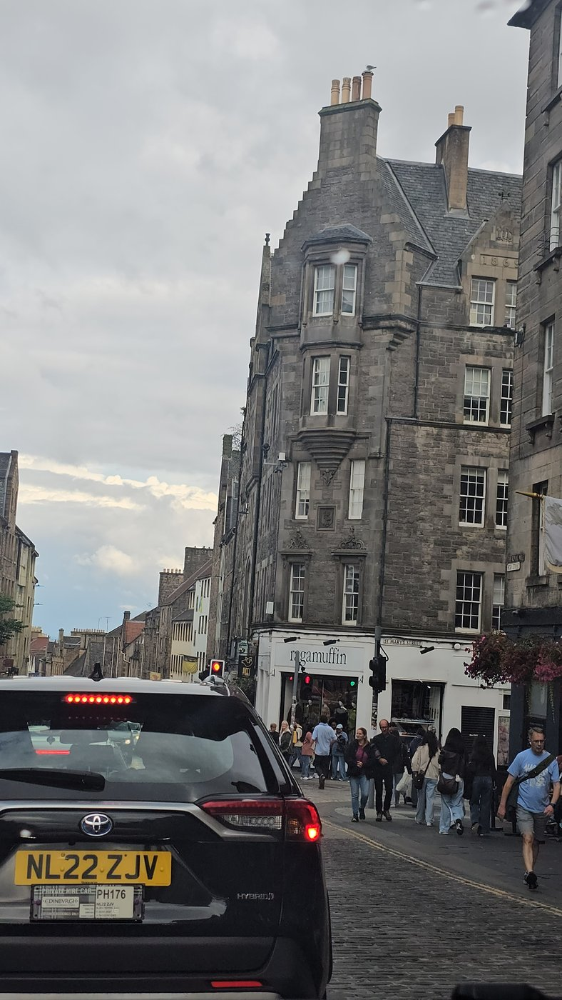
Ini bagian kota yang bikin Edinburgh terasa berbeda dari semua kota yang sudah dilewati bulan ini. Bangunannya tinggi bukan karena modern, tapi karena tua. Kota lamanya terjepit di punggung bukit sempit, tidak bisa melebar ke samping, jadi berabad-abad lalu penduduknya melakukan satu-satunya hal yang mungkin: membangun ke atas. Hasilnya deretan gedung batu bertingkat banyak yang sudah berdiri jauh sebelum ada lift.
Kebiasaan yang ternyata terbawa dari London
Sorenya, cara berkeliling yang kemarin baru ditemukan di London dipakai lagi di sini: naik bus tingkat, duduk di lantai atas.
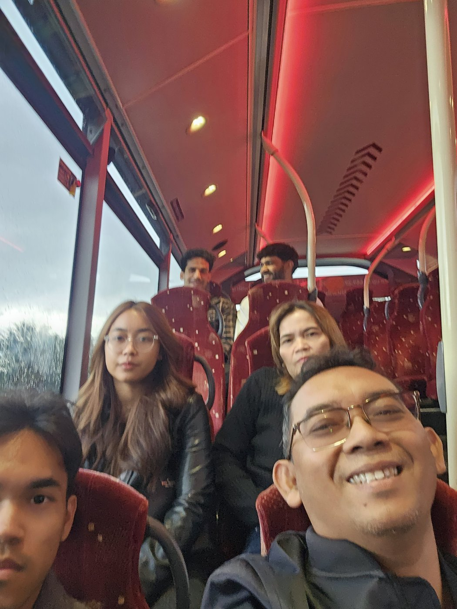
Lantai empat, tanpa lift, dan itu ada sebabnya
Menjelang malam, barulah menuju tempat menginap yang sebenarnya — dan itu bukan gedung berpilar tadi, melainkan sebuah apartemen sekitar dua puluh menit dari pusat kota.
Dan yang punya rumah bikin malamnya terasa lain: mbak Hesty, orang Indonesia yang sudah empat tahun tinggal di Inggris bersama suaminya yang orang Skotlandia. Setelah sebelas hari mengurus semuanya sendiri — mesin cuci, mesin check-in, mesin drop bagasi, mesin pesan makanan — malam ini yang membuka pintu justru orang yang bisa diajak ngobrol pakai bahasa sendiri.
Tapi ada satu hal yang perlu diketahui sebelum naik: apartemennya di lantai empat, dan tidak ada lift.
Jadi begitulah malam itu dimulai — empat koper besar, empat lantai, satu tangga. Yang di Hari 12 diseret naik tangga stasiun bawah tanah London, dan yang di Hari 11 harus dilarikan dari Terminal 1 ke Terminal 3, hari ini naik lagi ke lantai empat. Tema tangga di perjalanan ini ternyata tidak pernah benar-benar selesai.
Karena kami datang di bulan yang salah — atau justru paling benar
Sewanya £60–70 semalam untuk berempat. Di kota mana pun itu sudah murah. Di Edinburgh, di bulan Agustus, itu hampir tidak masuk akal.
Sebabnya satu: sepanjang Agustus, kota ini sedang berpesta. Setiap tahun Edinburgh menggelar festival seni yang berlangsung nyaris sebulan penuh — pertunjukan teater, komedi, musik, dan tari yang jumlahnya ribuan, tersebar di gedung pertunjukan besar sampai ruang belakang bar. Skalanya termasuk yang terbesar di dunia untuk jenis acara seperti ini.
Akibatnya bisa ditebak, dan ini yang perlu dihitung siapa pun yang mau ke sini: seluruh harga penginapan di kota ini naik selama bulan itu. Bukan naik sedikit — hotel yang di bulan biasa masuk akal bisa berlipat harganya, dan yang murah habis jauh-jauh hari. Kota yang penduduknya tidak sampai satu juta tiba-tiba kedatangan pengunjung dalam jumlah yang berlipat-lipat.
Dan di situlah hitungannya jadi masuk akal. Apa yang membuat apartemen ini murah adalah persis hal-hal yang bikin orang lain melewatkannya: letaknya bukan di pusat, tangganya empat lantai, dan tidak ada lift. Tiga alasan itu memotong harganya di bulan ketika seluruh kota sedang menaikkan harga.
Untuk rombongan yang tinggal beberapa malam dan lebih sering di luar daripada di kamar, itu tukar-tambah yang gampang diterima. Empat lantai tangga, sekali sehari, ditukar dengan selisih harga yang di bulan Agustus bisa berkali lipat.
Dan begitulah Hari 13 sampai di tujuannya. Berangkat dari Stasiun Euston jam 08.40, sampai Waverley jam setengah tiga lewat — lima jam empat puluh dua menit menurut jadwal, satu kali ganti kereta di Carlisle, tanpa antre pemeriksaan, tanpa menimbang koper, dan tanpa satu pun barang yang tertinggal di kota lain.
Dua hari lalu, satu perjalanan sejauh ini dilakukan lewat udara dan berakhir dengan empat koper hilang di negara lain. Hari ini jarak yang mirip ditempuh sambil tidur-tiduran di kursi. Kadang cara paling lambat justru yang paling sedikit merusak hari.